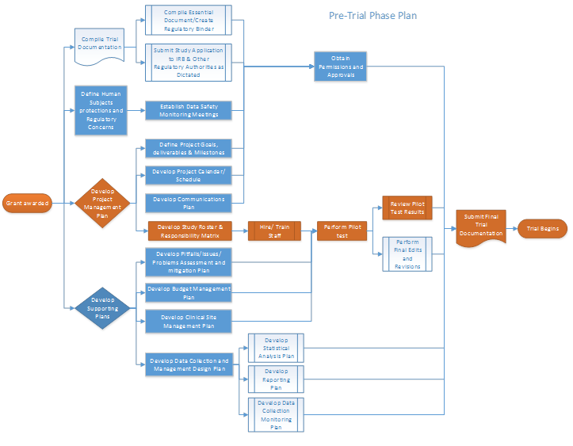

5 Project Management
5.1 Project management for Clinical trials
5.1.1 What
Project management is the application of processes, methods, knowledge, skills and experience to achieve the project objectives (Warburton_2014, PMBOk_2013).
5.1.2 Why
Given their complexity, Clinical Trials benefit from well-developed project management plans and monitoring processes. In this module we delineate provide guidance for management of funded clinical trial from planning through execution and closeout.
5.1.3 How
Overview of the project management process
For the purposes of management, it is useful to consider explicitly three phases of the trial execution process: a pre-trial phase, characterized by setup activities; the trial execution phase, comprising those activities (enrollment, measurement etc.) that constitute the major trial activities, and relying heavily on study monitoring and evaluation; and a study closeout phase, consisting of activities such activities as creation of final regulatory reports, publication and archiving (Figure 5.1). Investigators should anticipate a heavy investment of resources during the pre-trial phase, but with proper planning this investment will pay dividends during trial execution and closeout.
Figure 5.1 Simplified temporal overview of the management process for an intervention trial
This module will briefly define the requirements and challenges for project management for a clinical trial, and highlight potentially helpful approaches and tools for each. Documentation; human subjects concerns; development and use of a project management plan; management of personnel and interpersonal communications; and diagnosis and correction of problems will be discussed. For each of these, guidelines and useful templates are provided. Given their critical importance, activities embedded in the pre-trial phase are emphasized (see Figure 5.2).

Figure 5.2. Example flowchart depicting high-level summary of Pretrial activities and their order. In bold are the activities covered in this module. For details click on each activity relevant to each trial phase.
Figure 5.3. Example flowchart depicting high-level summary of trial activities
5.2 Management of trial documentation
See Essential Documentations Module
Table 5.1 Project management activities relevant for trial documentation presented by Phase
| Trial Document/Activity | Pre-trial | Execution | Closeout |
|---|---|---|---|
| Regulatory Binder | Set up; establish location for storage and security | Review/update and document changes on key trial documents | Complete and archive regulatory binder |
| Protocol | Review and approval by relevant parties | Manage and document protocol amendments; obtain relevant approvals | Archive all relevant documentation; submit to relevant authorities as necessary |
| Credentials and competencies | Gather research team documentation (i.e., resumes,onflict of interest forms, evidence of completion of required certifications) | Maintain study roster, record of competencies, and responsibilities chart | Archive |
| Investigator Brochure/Marketing | Develop marketing materials/ investigators brochure | Manage and document updates; obtain relevant approvals | |
| Manual of Procedures | Develop MOP; test procedures | Update and track changes throughout trial; maintain version control | Archive |
| Statistical Analysis Plan Statistical Analytic Protocol | Review SAP; generate signoff by relevant parties | Update and track changes throughout trial; maintain version control | Archive |
| Data Safety and Monitoring Documents | Author charter; recruit DSMB members, assign chairpersonship in partnership with funders | Circulate open and closed session reports at previously agreed upon interval prior to meetings. Submit to relevant authorities (e.g. DSMB, IRB, funding agencies) | Archive |
| DSMB Report | Develop template report; obtain relevant approvals | Update and track changes throughout trial; maintain | Develop and disseminate final version control DSMB report; Archive |
| Meeting Templates | Design meeting templates (agendas and minutes) | Co-author and maintain meeting records; disseminate key information | |
| Tracking / Monitoring Reports | Develop tracking and monitoring templates for enrollment, study visit attendance, protocol adherence, etc. | :Maintain record of findings as motivation for process improvement, changes to procedures and protocol amendments | |
| Data Quality Reports | Develop reporting of data completeness and quality | Maintain record of findings as motivation for process improvement, changes to procedures and protocol amendments | |
| Additional Documentation | Develop study logs, documentation of adverse events, tracking of participant disposition, IRB submissions and approvals, etc. | Update and track changes throughout trial; maintain version control | Maintain and archive record of all relevant reporting |
5.3 Management and maintenance of human subject protections and other regualtory interactions.
See Essential Documentations and Human Subject Protection and Research Regulation Modules.
5.4 Management of trials activities during pretrial and execution
5.4.1 Creating a Project Management Plan
5.4.1.1 What
A Project Management Plan is a document that results in a dynamic set of documents that clearly define the goals and provide direction for the project. It articulates the specific deliverables, as well as procedures, timelines, and resources necessary to produce those deliverables, as well as quality measures to meet the required standards. The plan should be based on the scope of the project as defined in the protocol. The following tasks are critical to creating a project management plan:
- Define the project goals/deliverables/milestones
- Management using outline-based and/or graphical tools for calendars and schedules
- Management of internal and external communications
- Management of project personnel and responsibilities
5.4.1.2 Why
A well-designed project plan increases the likelihood of successfully managing a clinical trial. It supports coherent organization, effective management, facilitates transparency, and the detection of foreseeable problems/ issues via monitoring of the project’s critical path. The process and subsequent documentation of all the project progress keeps things focused and moving forward.
5.4.1.3 How
5.4.1.3.1 Define project goals/ deliverables/ milestones
The project goals, deliverables and milestones are described in the trial protocol. The protocol should be taken as the essential and controlling guide implicating the relevant protocol management activities.
5.4.1.3.2 Organizing structure
Project managers should be guided by an overarching structure. For instance, in a large and complex trial with a large number of deliverables, investigators and managers may utilize a formal Work Breakdown Structure (WBS). The WBS is a hierarchical decomposition list of necessary tasks, with each descending level representing an increasing detailed definition of the work. Importantly, the WBS is designed to be focused on generation of deliverables, i.e. tangible work-product such as protocols, procedures and study reports. The WBS provides a mechanism to parse deliverables into smaller manageable components; the duration and cost of each step in the process can thus be better established at a granular level.
For a smaller project, it may not be the case that a formal WBS is necessary or efficient, but the detailed breakdown of specific tasks, along with resources required, is almost never wasted effort. Thus the following sections outline a system that is almost always relevant to project management, but that may be adopted more or less formally as circumstances dictate. The WBS can be developed using calendaring, graphical and outlining tools.
5.4.2 Management using outline-based calendars and schedules
A key component of the project’s success is the management of its schedule. The project manager should:
- Define all activities required to produce each of the project’s deliverables.
- Define the order or sequence in which the activities must happen and the relationship between them.
- Establish the resources (both human and material) necessary to accomplish each activity.
- Estimate the activity duration.
These items may be applied both at the high level of the project – where, for instance, “develop protocol” might be a single task – as well as at the detailed level, where many tasks necessary to protocol development may be broken out in detail. While the latter is a substantial outlay of resources, it is important to note that the scope of a task and the resources required are more easily estimated for smaller sub-tasks. Accordingly the work invested in breaking out tasks in detail may well be worth it in a complex project.
An example of a simplified schedule specific to protocol development is given in Table 5.2; task start and end dates, human resources, and other materials would typically be added to this.
Table 5.2 Example of a schedule specific to protocol development
| Activity Code | Activity/ Deliverable | Duration (days) | Predecessor / Prerequisite |
|---|---|---|---|
| A | Draft Protocol | 30 | |
| B | Circulate Protocol Draft for Feedback and Input | 14 | A |
| C | Integrate changes | 18 | B |
| D | Circulate Draft Protocol for final Feedback and Input | 14 | C |
| E | Finalize Protocol | 8 | D |
In the above example, the activities occur in a linear fashion where one must precede the next. Other activities and tasks may more easily and efficiently proceed along multiple, parallel tracks.
5.4.2.1 Management using Graphical Tools
Other management tools that may be helpful in creating the project timeline or process maps include flowcharts, Gantt Charts, and network diagrams. We present some examples of the use of these tools below.
Flowcharts - are graphical depictions of the process flow corresponding to the outline format exemplified by Table 5.3. A flowchart replicating Table 5.3 would consist of a series of boxes laid out in boringly linear fashion and would therefore be of limited utility. For more complex development along parallel tracks, by contrast, a graphical depiction offers considerable advantages, as shown in Figures 5.2 and 5.3. These flowcharts depict pretrial, execution and closeout activities at a high level. Once again, each of the components of the activities depicted here could itself be the subject of a detailed tabular or graphical breakdown. A key strength of these organizing tools is their applicability at the level of granular detail and high-level project overview, simultaneously.
The Network Diagram is an enhanced flowchart that associates each task with a duration and, potential, anticipated resource expenditures. This is particularly useful in helping the investigative team understand the impact of delays in any task on the overall timeline. Because many tasks have prerequisites while others may be worked on in parallel, it is not the case that delays in different tasks will have similar impact.
A useful concept, therefore, is the critical path of the project. This is defined as the longest sequence of tasks stretching from project start to finish. It has the feature that account for the fact that in delays in any of the activities along the path will lead delay completion of the project, unless this delay can be made up elsewhere along the critical path. These concepts are illustrated in Figure 5.4.
 Figure 5.4. The project critical path is outline in orange; any delays along this path imply an elongation of the total project duration.
Management of internal and external communications
Key elements of the communications plan include:
5.4.2.2 Opportunities for communication
The management team should assist in developing a schedule of interactions between members of the investigative team, as well as with internal and external stakeholders. This should include transmission of formal reports, and also the times, locations, duration, and attendees of meetings and other interactions.
5.4.2.3 Means of communications
The management team should assist in procuring, testing and maintaining the means of project communications. These should be chosen such that capabilities correspond to project needs. Ease of use and reliability are additional key features that must be emphasized.
5.4.2.4 Recording of communications and trial progress
The project management team should take an active role in maintenance of the record of communications, including meeting minutes and agendas. Under some scenarios, stakeholders (e.g. funding agencies) may reserve the right to determine the official level of high-level interactions, in which case the management team may contribute as appropriate.
5.4.3 Management of project personnel and responsibilities
The management team should develop a roster of personnel based on the roles and responsibilities of team members. Ideally this will identify the individuals primarily responsible (i.e. those that execute the work) and accountable (i.e. those ultimately answerable for the completion) for each function and task. Teams may additionally elect to identify -those who have secondary responsibilities relating to consulting on, or approval of, specific tasks and functions.
5.5 Supporting plans
5.5.1 Problem assessment and mitigation management plan
Every clinical trial is subject to problems that may impact the normal progress of the project. Fundamental to the trial’s success is the development of a comprehensive issues assessment and mitigation plan. During the planning phase it involves the identification and quantification of potential challenges that can impact (positively or negatively) the trial and/or its progress. Based on the assessment, the manager should develop a response plan. During trial phase the manager is to monitor and control the possible issues. The purpose of a problem assessment during the development stage of the trial is to first improve the study design and to be able to successfully manage both the foreseeable and unforeseeable problems.
5.5.1.1 Problem Management Response Plan
After identifying and evaluating potential problems that may impact the trial, it is advisable to develop a problem management response plan. The purpose is to develop response strategies to reduce the potential of a problem to occur, or minimize its impact if it does. The main components of the plan should include:
- Issue management scope and objectives
- The methods to identify, assess, quantify, response, monitor and control the issue/ problem.
- Personnel involved in the analysis and response processes.
- The tools assigned to enhance opportunities and reduce threats to the trial’s objectives.
- Issue/problem prioritization (i.e., the level of impact to the schedule, budget and/or quality of the trial results).
- A response plan for tracking identified problems, monitoring the residual issues, identifying new problems, and evaluating issues process effectiveness throughout the trial.
- Communications plan for the distribution of problem update reports.
The key for a successful problem management plan is to maintain a constant monitoring and reevaluation of the potential problems as well as the circumstances in which they emerge. As problems evolve differently during different phases of the trials it is important to be vigilant and be adaptable.
5.5.2 Clinical site management plan
Another essential element of the clinical trial’s execution and its success is the Site Management Plan. Site Management goes beyond simply monitoring a site. It focuses on regular, consistent communication with site stakeholders during the pre-trial, trial, and closeout phases. The first step in the process is to identify a reliable, primary point-of-contact for the site during the course of a trial. Is equally vital that sites understand the importance of maintaining regular communications with the primary study site or study Sponsor, depending on trial type. Sites should also have a solid understanding of whom to contact with questions, issues, and concerns that may arise at any point during the trial.
The Site Management Plan should include a set of expectations, organization, and the establishment of metrics to track performance, and building and strengthen relationships. Table 5.3 provides a list of activities to undertake during the different phases of the trial.
Table 5.3 Site Management Plan during the different phases of the Clinical Trial
| Pre-trial | Execution | Closeout |
|---|---|---|
| Define sample size (Krishnankutty_2012) and recruitment strategies | Review/ monitor data collection issues | Complete final source data verification of Case Report Forms (CRFs/ eCRFs), ensuring protocol adherence, and managing the collection of final safety data |
| Review site feasibility and qualifications for the study | ||
| Define recruitment timeline | ||
| Establish Site contact/ develop relationships with sites | Keep an updated list of staff turnover for the sites | |
| Create site training and provision of study documents for the in-service presentation (i.e., Introductory letters/ handouts/ brochures/ HIPAA waivers) | Re-in-service sites as often as needed (to keep momentum of the trial) | |
| Recruit sites | Monitor site (remotely or on-site) according to regulations | Ensure all documentation (regulatory correspondence) is filed appropriately and ready for the clinical monitor or Clinical Research Associate (CRA) to review during the close-out visit |
| Follow-up site with phone calls to administrators and track those communications in a log | ||
| Hire/ Train/ Develop field staff | ||
| Set meeting schedule for the staff | Meet with staff weekly at first to problem solve. Then change to bi-weekly or monthly | |
| Develop site monitoring/Quality Assurance log | Update log | |
| Define roles of study field staff vs. sites responsibilities | ||
| Inform sites on performance and contractual issues | Track problems/ issues and their resolutions | |
| Ensure return or destruction of all study related materials (i.e., unused lab kits and CRFs) |
The appropriate level of site management and oversight empowers sites to effectively recruit, treat, and retain subjects, while ensures regulatory compliance, protocol adherence, the protection of subjects’ right, subject safety, and overall management of screened and enrolled subjects. Presenting a clear understanding of the communication flow will often reduce protocol violations and deviation, an address data issues and questions, thereby increasing the quality and integrity of the clinical trial data.
5.5.3 Budget management plan
All financial aspects of the trial must be documented in an agreement between the sponsor and the investigator/institution. A budget management plan should aim to monitor the budget continuously as the trial progresses given that delays and/ or changes on the trial’s scope may negatively impact it. Scope creep or the tendency to add requirements to the scope, often results in deliverables being out of schedule and the trial being over budget. For this reason the budget management plan should also include a routine schedule for revisions and updates.
5.5.4 Clinical Data Management Plan
The design of the research data lifecycle should be strategized in the clinical data management plan (CDMP). The exact content of the CDMP will vary on the type of trial, the number of sites involved, and the sponsor’s specifications. Among the recommended items to include are:
- Clinical data management definition and procedures
- Systems for data collection and management
- Data entry procedures
- Data security procedures
- Data cleaning and quality control procedures
- Data import and exports procedures
- Case Report Forms (CRF)
- Monitoring of study participants
- Screening/Recruitment
- Randomization/Blinding procedures
- Cessation of Intervention
- Withdrawals
- Tracking
- Reporting
- Safety
- Adverse events and Serious Adverse Events
- Screening and Enrollment
- Data Quality and Completeness
- Progress and Final Reports
- Additional Reports
- Trial Documents and Data Retention
- Retention of Trial Documents
- Data Use Agreements (DUA)
For details see the Data Management Module. Also IFAR’s Sensitive Data Security Policy and Boston Children’s Hospital Guideline for Developing a Manual of Operations.
5.6 Special considerations for older subjects
None
5.7 Common Pitfalls
- Lack of management follow-up and poor communications systems.
- Failure to submit amendments or keep up with study documentation updates.
- Not keeping up with staff certifications.
- Personnel turnover and a lack of redundancies buildup.
- Lack of compliance with regulations.
- Missing reports deadlines due to a lack of organization in the calendar.
- Research sites closures during the trial collection cycle.
- Unanticipated scope changes that affect the budget and schedule.
- Ineffective recruitment.
- Ineffective mechanism to maintain blinding.
- Ineffective use of technologies.
- Failure to update security systems.
5.8 Resources
@book{Warburton_2014, title = {The Art & Science of Project Management, Second Edition}, author = {{Warburton, R and Vijay Kanabar}}, organization = {RW-Press}, address = {Newport, RI.}, year = {2014} }
@book{PMBOk_2013, title = {A guide to the Project Management, Fifth Edition}, author = {{Project Management Institute}}, organization = {PMBOK® Guide}, address = {Atlanta, GA.}, year = {2013} }
@book{Farrell_2010, title = {Managing Clinical Trials}, author = {{Farrell, B, S. Kenyon and H. Shakur}}, organization = {Trials 11: 78.}, address = {London, United Kindom}, year = {2010}, url = {http://www.trialsjournal.com/content/11/1/78}, }
@manual{BU-BMC-Templates, title = {BU/BMC Clinical Research Study Regulatory Binder Templates}, organization = {Boston University Medical Campus Clinical Research Resources Office}, url = {http://www.bumc.bu.edu/crro/files/2010/03/Regulatory-binder-tab-with-TOC-and-cover-pg-3-4-10.pdf}, }
@website{OSU_toolkit, title = {Ohio State University Project Management for Research Toolkit}, organization = {Ohio State University, Center For Clinical and Translational Science}, address = {Columbus, OH}, url = {https://ccts.osu.edu/node/4433}, }
@Website{ITHS_checklist, title = {Study Start-up checklist},
organization = {Institute of Translational Health Sciences}, address = {Seattle, WA} url = {https://www.iths.org/investigators/forms-templates/study-document-templates/}, grant = {UL1TR000423} }
@Website{FDA-study subjects, title = {Recruiting Study Subjects – Information Sheet}, organization = {U.S. Food and Drug Administration. U.S. Department of Health and Human Services}, address = {}, url = {http://www.fda.gov/RegulatoryInformation/Guidances/ucm126428.htm} }
@website{NIA-Guide MOP, title = {Guidelines for Developing a Manual of Operations and Procedures (MOP), Version 2}, organization = {National Institute on Aging}, year = {2011}, month = {September}, day = {30}, url = {http://webcache.googleusercontent.com/search?q=cache:LN9CyBbTsN4J:https://www.nia.nih.gov/sites/default/files/manualofproceduresmopfinal2_0.doc+&cd=1&hl=en&ct=clnk&gl=us} }
@book{Stone_2007, title = {Conducting Clinical Research: A Practical Guide for Physicians, Nurses, Study Coordinators, and Investigators, Second Edition}, author = {{Stone, J. A.}} organization = {Mountainside MD Press}, address = {Cumberland, MD}, year = {2007} url = {http://conductingclinicalresearch.com/CCR%20Forms%20and%20Worksheets.pdf} }
@website{NHI-compliance, title = {Grantees Compliance Steps}, organization = {National Institutes of Helath}, url = {http://grants.nih.gov/ClinicalTrials_fdaaa/steps.htm} }
@website{FDA-CT, title = {Clinical Trials and Human Subject Protection.}, organization = {U.S. Food and Drug Administration. U.S. Department of Health and Human Services}, url = {http://www.fda.gov/scienceresearch/specialtopics/runningclinicaltrials/default.htm} }
@webpage{FDA_CDER_CBER, title = {Guidance for Industry E6 Good Clinical Practice: Consolidated Guidance}, organization = {U.S. Department of Health and Human Services Food and Drug Administration Center for Drug Evaluation and Research (CDER) Center for Biologics Evaluation and Research (CBER)}, year = {1996}, month = {April}, url = {https://www.fda.gov/downloads/drugs/guidances/ucm073122.pdf} }
@website{Health_Canada, title = {Ethics Review of Research Involving Humans – Administrative Policy and Procedures Manual}, organization = {Health Canada Research Ethics Board}, url = {http://www.hc-sc.gc.ca/sr-sr/pubs/advice-avis/reb-cer/index-eng.php} }
@website{EuroComm, title = {Medicinal Products for Human Use}, organization = {European commission}, url = {http://ec.europa.eu/health/human-use/clinical-trials/index_en.htm} }
@website{UCL, title = {Planning a Clinical Trial Toolkit –Routemap}, organization = {University College of London}, url = {http://www.ct-toolkit.ac.uk/} }
@book{Robinson_2014, title = {Communications Handbook for Clinical Trials}, author = {{Robinson E.T., D. Baron, L.L. Heise, J. Moffett and S.V. Harlan}}, address = {Research Triangle Park, NC.}, year = {2014} url = {http://www.fhi360.org/sites/default/files/media/documents/Communications%20Handbook%20for%20Clinical%20Trials.pdf} ISBN = {1-933702-57-5} }
@book{Liebig_2010, title = {Reducing Risk through Mitigation Strategies: Proactive risk management helps pharma protect their product development investments and future}, author = {{Liebig, H. and R. Hastings}}, journal = {Applied Clinical Trials}, url = {http://www.appliedclinicaltrialsonline.com/reducing-risk-through-mitigation-strategies} }
@article{Krishnankutty_2012, doi = {10.4103/0253-7613.93842}, url = {http://dx.doi.org/10.4103/0253-7613.93842}, year = 2012, publisher = {Medknow}, volume = {44}, number = {2}, pages = {168-172}, author = {Binny Krishnankutty and BR Naveen Kumar and LathaS Moodahadu and Shantala Bellary}, title = {Data management in clinical research: An overview}, journal = {Indian Journal of Pharmacology}, }
@book{Domansky_2009, title = {Successful Randomized Trials, A handbook for the 21st Century}, author = {{Domansky, M and S McKinlay}}, publisher = {Lippincott Williams & Wilkins}, address = {Philadelphia, PA}, year = 2009 }
@website{CFR21_part11, url = {https://www.accessdata.fda.gov/scripts/cdrh/cfdocs/cfcfr/CFRSearch.cfm?CFRPart=11}, title = {The United States Code of Federal Regulations 21 {CFR}, Part 211}, }
@website{ICH_E6(R2), title = {Integrated Addendum to ICH E6(R1): Guideline for Good Clinical Practice E6(R2). Current Step 2 version}, organization = {International Conference on Harmonisation of Technical Requirements For Registration of Pharmaceuticals for Human Use}, year = {2015}, month = {June}, url = {http://www.ich.org/products/guidelines/efficacy/article/efficacy-guidelines.html} }
@article{Martin_2011, doi = {10.2147/oajct.s22967}, url = {http://dx.doi.org/10.2147/oajct.s22967}, year = 2011, month = {aug}, publisher = {Dove Medical Press Ltd.}, pages = {43}, author = {Greg Martin}, title = {Clinical trials: innovation, progress and controversy}, journal = {Open Access Journal of Clinical Trials} }
@website{Health_Catalyst, title = {Clinical Data Management: 3 Improvements Startegies}, url = {https://www.healthcatalyst.com/improve-clinical-data-management-healthcare-reduce-waste?gclid=CLTestHd-ssCFUYehgodqzoO8Q} }
@article{Farrar_2010, doi = {10.1038/nm.2249}, url = {http://dx.doi.org/10.1038/nm.2249}, year = 2010, month = {oct}, publisher = {Nature Publishing Group}, Pages = {1284-1293}, author = {John T Farrar}, title = {Advances in clinical research methodology for pain clinical trials}, journal = {Nature Medicine} }
@website{Consort, title = {Consort transparent Reporting of trials}, organization = {Consort}, url = {http://www.consort-statement.org/consort-statement/flow-diagram} }
@website{Harvard_Catalyst, title = {The Harvard Clinical and Translational Science Center. An Investigators’ Guide to Research Data Management Practices}, organization = {Harvard Catalyst}, url = {https://catalyst.harvard.edu/pdf/regulatory/Investigators%20Guide%20to%20RDM%20practice.pdf} }
@website{UWA_toolkit, title = {Research Data Management Toolkit: Research Lifecycle}, organization = {The University of Western Australia}, url = {http://guides.is.uwa.edu.au/content.php?pid=319161&sid=2616069} }
@website{nidcr_toolkit, title = {Toolkit for Clinical Researchers}, organization = {National Institute of Dental and Craniofacial Research}, url = {http://www.nidcr.nih.gov/research/toolkit/} }
@website{hipaa_deid title = {Health Information privacy: The De-identification Standard}, organization = {U.S. Department of Health & Human Services}, url = {http://www.hhs.gov/hipaa/for-professionals/privacy/special-topics/de-identification/index.html} }
@article{Krishnankutty_2012, doi = {10.4103/0253-7613.93842}, url = {http://dx.doi.org/10.4103/0253-7613.93842}, year = 2012, publisher = {Medknow}, volume = {44}, number = {2}, pages = {168}, author = {Binny Krishnankutty and BR Naveen Kumar and LathaS Moodahadu and Shantala Bellary}, title = {Data management in clinical research: An overview}, journal = {Indian Journal of Pharmacology}
@website{NIH_standars_CR, title = {Standards for Clinical Research within the NIH Intramural Research Program}, organization = {National Intitutes of Health, Clinical Center}, year = {2009} url = {http://www.cc.nih.gov/ccc/clinicalresearch/standards1.html#info} }
@website{ICH_E2A, title = {ICH E2A Guidelines – Safety Data Management: Definitions and standards for expedited reporting}, organization = {International Council of Harmonisation} year = {1995}, month = {June}, url = {http://www.ema.europa.eu/docs/en_GB/document_library/Scientific_guideline/2009/09/WC500002749.pdf}, }
@website{Steneck_2007, title = {Introduction to the responsible conduct of research}, organization = {Office of Research Integrity} Location = {Washington, DC} year = {2207}, url = {https://ori.hhs.gov/sites/default/files/rcrintro.pdf}, }
@website{Clinical_Tools, title = {Guidelines for Responsible Data Management in Scientific Research}, organization = {Clinical Tools Inc} Funded = {Office of Research Integrity, US Department of Health and Human Services} url = {http://ori.hhs.gov/images/ddblock/data.pdf}, }
@website{IFAR_data_access, title = {Institute for Aging Research Policies and Procedures - Staff Changes and Data Access Policy}, organization = {Institute for Aging Research} Location = {Roslindale, MA} url = {http://thehslhub/~/media/HSLNet/P_P/IFAR/IFARPPStaffChangesandDataAccess.ashx}, }
@website{IFAR_sensitive_data_suppress, title = {Institute for Aging Research Policies and Procedures - Sensitive Data Suppression Policy}, organization = {Institute for Aging Research} Location = {Roslindale, MA} url = {http://thehslhub/~/media/HSLNet/P_P/IFAR/IFARPPSensitiveDataSuppression.ashx}, }
@website{IFAR_sensitive_data_sharing, title = {Institute for Aging Research Policies and Procedures - Sensitive Data Sharing Policy}, organization = {Institute for Aging Research} Location = {Roslindale, MA} url = {http://thehslhub/~/media/HSLNet/P_P/IFAR/IFARPPSensitiveDataSharing.ashx}, }
@website{IFAR_sensitive_data_security, title = {Institute for Aging Research Policies and Procedures - Sensitive Data Security Policy}, organization = {Institute for Aging Research} Location = {Roslindale, MA} url = {http://thehslhub/~/media/HSLNet/P_P/IFAR/IFARPPSensitiveDataSecurity.ashx}, }
@website{IFAR_sensitive_data_retention, title = {Institute for Aging Research Policies and Procedures - Sensitive Data Retention and Destruction Policy}, organization = {Institute for Aging Research} Location = {Roslindale, MA} url = {http://thehslhub/~/media/HSLNet/P_P/IFAR/IFARPPSensitiveDataRetentionandDestruction.ashx}, }
@website{IFAR_DUA, title = {Institute for Aging Research Policies and Procedures - Limited Data Sets and Data Use Agreements}, organization = {Institute for Aging Research} Location = {Roslindale, MA} url = {http://thehslhub/~/media/HSLNet/P_P/IFAR/IFARPPLimitedDataSetsandDataUseAgreements.ashx}, }
@website{IFAR_data_encrypt, title = {Institute for Aging Research Policies and Procedures - Data Encryption}, organization = {Institute for Aging Research} Location = {Roslindale, MA} url = {http://thehslhub/~/media/HSLNet/P_P/IFAR/IFARPPDataEncryption.ashx}, }
@website{IFAR_data_Ret_destr, title = {Institute for Aging Research Policies and Procedures - Data Retention and Destruction}, organization = {Institute for Aging Research} Location = {Roslindale, MA} url = {http://thehslhub/~/media/HSLNet/P_P/IFAR/IFARPPSensitiveDataRetentionandDestruction.ashx}, }
@article{Gallagher_2014, doi = {10.1016/j.urolonc.2012.11.019}, url = {http://dx.doi.org/10.1016/j.urolonc.2012.11.019}, year = 2014, month = {jan}, publisher = {Elsevier {BV}}, volume = {32}, number = {1}, pages = {32.e1–32.e9}, author = {Sarah A. Gallagher and Angela B. Smith and Jonathan E. Matthews and Clarence W. Potter and Michael E. Woods and Mathew Raynor and Eric M. Wallen and W. Kimryn Rathmell and Young E. Whang and William Y. Kim and Paul A. Godley and Ronald C. Chen and Andrew Wang and Chaochen You and Daniel A. Barocas and Raj S. Pruthi and Matthew E. Nielsen and Matthew I. Milowsky}, title = {Roadmap for the development of the University of North Carolina at Chapel Hill Genitourinary {OncoLogy} Database{}{UNC} {GOLD}}, journal = {Urologic Oncology: Seminars and Original Investigations} }
@website{HHS_hippa, tittle = {Health Information privacy: The De-identification Standard}, organization = {U.S. Department of Health & Human Services}, usl = {http://www.hhs.gov/hipaa/for-professionals/privacy/special-topics/de-identification/index.html}, }
@website{Catalyst, title = {Harvard Catalyst Regulatory Atlas} organizatin = {The Harvard Clinical and Translational Science Center}, url = {http://connects.catalyst.harvard.edu/regulatoryatlas/?mode=c&id=51} }
@website{BCH_RPG, title = {Research Practive Guidelines} organizatin = {Boston Children’s Hospital}, url = {http://www.childrenshospital.org/research-and-innovation/research/clinical/clinical-research-center/research-practice-guidelines} }
@website{BCH_RPG-05, title = {Guideline for Developing a Manual of Operations (MOO)-RPG-05} organizatin = {Boston Children’s Hospital}, url = {http://www.childrenshospital.org/~/media/research-and-innovation/clinical-research-center/rpg_03_final-12115/rpg052014.ashx?la=en} }
@website{BCH_RPG-07, title = {Guidelines for Research Data Collection-RPG-07} organizatin = {Boston Children’s Hospital}, url = {http://www.childrenshospital.org/~/media/research-and-innovation/clinical-research-center/rpg0711-14-14final.ashx?la=en} }
@website{NIA_NIH_toobox, title = {Clinical Research Study Investigator’s Toolbox} organizatin = {National Institute on Aging}, url = {https://www.nia.nih.gov/research/dgcg/clinical-research-study-investigators-toolbox/startup} }
@website{OpenClinica, title = {Fundamentals Aspects of Electronic Data Capture} organizatin = {Open Clinica}, url = {https://www.openclinica.com/electronic_data_capture/} }